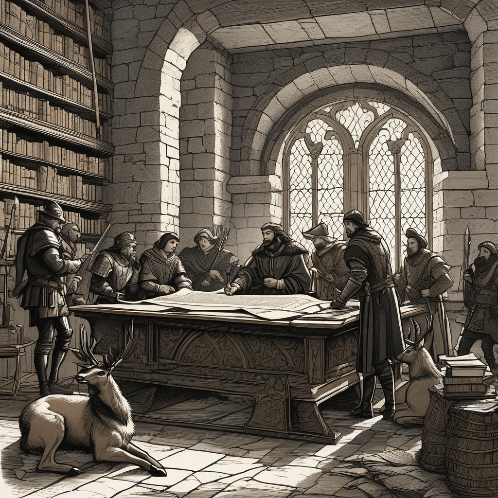
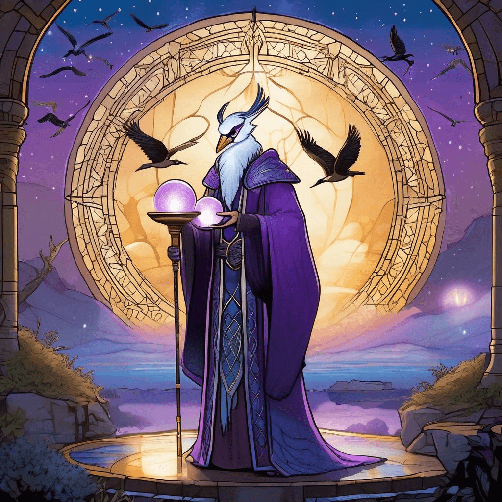

Chronicle Entry
April 7, 2026
Upon this Seventh Day of April in the Year Two Thousand and Twenty-Six, Grand Magus Alistair doth issue most urgent proclamation! The final hours approach for noble hunters of the Dakota Kingdom to submit their scrolls of intent for the Great Autumn Hunts! The Bureau of Game and Fish Powers demands tribute and application ere the sun sets this very week for pursuit of the mighty elk, the noble deer, and the swift pronghorn. Let not slothful procrastination deny thee the glory of November's harvest, for these bureaucratic gatekeepers show no mercy to tardy huntsmen, regardless of thy prowess with bow or rifle!
Meanwhile, to the northeast in the lands along the Platte River, mine scrying orb reveals a spectacle of avian magnificence! Half a million sandhill cranes have descended upon Nebraska's wetlands in their ancient migration rite, a sight to humble even this Grand Magus. Though I champion the hunter's pursuit, I am not so proud as to deny the majesty of witnessing such winged multitudes staging for their northern journey. The wise conservationist knows when to observe and when to harvest.

✨ Hunting Scroll Deadline
In the realm of mystical tokens and arcane commerce, Bitcoin hath climbed to sixty-eight thousand, four hundred and fifty-two golden pieces! The freedom currency strengthens whilst the Anthropic Guild unveils their new defensive sorcery called Project Glasswing and Claude Mythos, designed to fortify the realm's critical enchantments against malevolent forces. Even this ancient mage must acknowledge when the young technomancers craft worthy protective spells for our digital keeps and strongholds.

✨ Crane Scrying Vision
Thus speaks Grand Magus Alistair: The hunter who misses today's application deadline shall spend autumn watching others claim their trophies, a fate worse than any curse I could conjure!
✨ Bitcoin Technomancer Vault